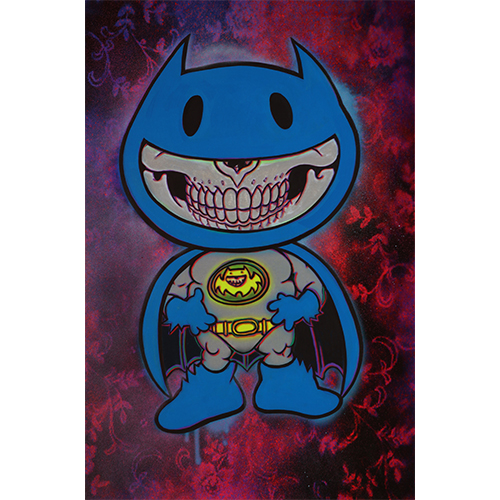
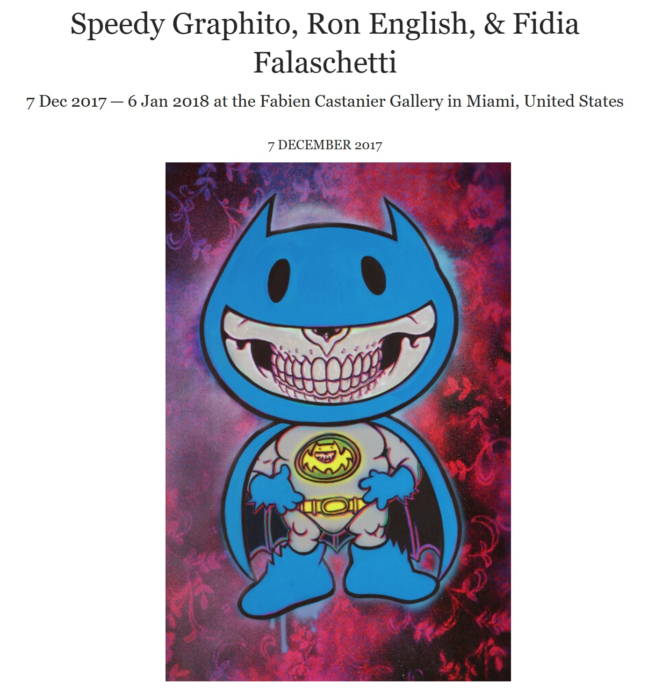

Exhibitions
TOYBOX: America in the Visuals, Corey Helford Gallery, Los Angeles, California, US, December 2, 2017–January 6, 2018.
POPADELIC, Fabien Castanier Gallery, Los Angeles, California, US, December 7, 2017–January 6, 2018.
Literature
Ron English, Original Grin: The Art of Ron English (Paris: Cernunnos, 2019), p. 25. ISBN 978-2374950938.
Notes
This work appears on Meer’s page for Popadelic at Fabien Castanier Gallery, available here, accessed April 14, 2026.
The composition references DC Comics’ Batman; a representative image is available here.
Ancillary Documentation
